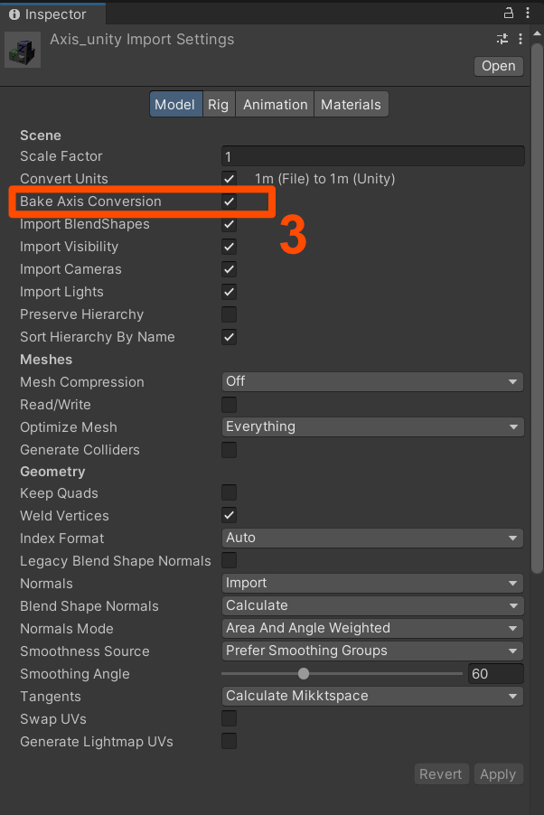

Unity Guide
Simple Export ships with an FBX preset for Unity. Select the correct preset
in Properties -> Output -> Simple Export -> Preset. The preset ensures that the following settings are configured
correctly.FBX is the recommended format for importing assets into Unity. It is widely supported and the current industry
standard.
Export from Blender
Exporting static assets to Unity is straightforward and only requires 3 simple steps:
Step 1: Select the Unity Preset
Make sure the Unity-default preset is selected
Step 2: Create an Export Collection
Create an export collection - that will now automatically apply the settings for Unity. This can be done by using the plus button in the Export List, right-clicking on the collection in the Outliner or right-clicking on the parent object in the 3D Viewport
Step 3: Move the Collection to the Origin
Select Move by Collection Center in the Pre Export Defaults to move the collection to the origin based on the collection offset. This is important for Unity, as it expects the pivot point of the mesh to be at the origin.
Step 4: Export the Collection
Export the collection from the Export List, the Outliner or by exporting all selected collections.
Import to Unity
You can now simply import your asset into Unity by dragging and dropping the exported FBX file into the Unity or using the import asset. One thing to consider to clean up the transformations is to Bake Axis Conversion in the import settings. This will ensure that the mesh is imported with the correct transformations and orientation. This will ensure that there are no weird rotaitons on the asset.

Step by step:
- Drag and drop the FBX file into the Unity Project window
- Select the FBX file in the Project window
- In the Inspector window, under the Model tab, check the "Bake Axis Conversion" option
- Click "Apply" to save the changes
- Now you can drag and drop the model into your scene
Exporting Animated Characters
Rigged, animated characters (an armature with a skinned mesh and one or more Actions) use a separate preset from
static meshes: Unity-animation. The static Unity-default preset intentionally exports no animation at all -
using it on a rigged character will give you the mesh and skeleton with no motion. Unity-animation bakes every
Action in the file as its own take, so Unity can split them back out into individual Animation Clips on import.
Step 1: Select the Unity Animation Preset
Make sure Unity-animation is selected as the Export Collection Preset, instead of Unity-default.
Step 2: Create an Export Collection
Select the armature (its mesh and any children are picked up automatically) and create an export collection, exactly as for a static mesh - the plus button in the Export List, right-click on the object in the Outliner, or right-click in the 3D Viewport.
Step 3: Export the Collection
Export from the Export List, the Outliner, or by exporting all selected collections. Every Action currently in the file gets baked into the export - there is no separate step to pick which animations go out.
Multiple characters sharing one skeleton type
If several characters share the same rig, keep the Actions you want in each character's own .blend file (or
use Action assignment/filtering in your own pipeline) before exporting - Unity-animation exports every
Action present in the file, not just the ones currently played back on the armature.
Importing Animated Characters into Unity
Dragging the exported FBX into Unity gets you the mesh, skeleton and Animation Clips - but Unity does not automatically wire them up to anything playable. Three manual steps in the Unity Editor turn that into a character you can actually animate:
Step 1: Set the Avatar Definition
Select the imported FBX and open the Rig tab in the Inspector.
- Animation Type:
Genericfor most non-human or custom-proportioned rigs;Humanoidif the skeleton maps cleanly onto Unity's Humanoid bone set and you want Humanoid-specific features (retargeting, Inverse Kinematics, Avatar Masks). - Avatar Definition:
Create From This Model.
Click Apply. This is the step that is easy to miss: Unity's default Avatar Definition is No Avatar, even when Animation Type is already set to Generic - without explicitly changing it, the model imports with its Animation Clips present but with no Avatar and no Animator component on the prefab, so nothing can play them.
Step 2: Check the imported clips
Still in the Rig tab (or the Animation tab, depending on your Unity version), confirm each Action came through as its own named clip. Every Action from the Blender file should be listed - if a clip is missing, check that its Action wasn't excluded before export.
Step 3: Create an Animator Controller
Unity never generates an Animator Controller automatically. Drag the character prefab into the scene, then:
- Right-click in the Project window → Create → Animator Controller.
- Double-click it to open the Animator window, drag your clips in as States, and wire up the Transitions you need (a Blend Tree or simple bool/trigger parameters for something like Idle ↔ Walk).
- Assign the controller to the character's Animator component (added automatically once step 1 is applied).
Only after this step will the character actually animate in Play Mode - importing the FBX alone only gets you the raw clips.
The Simple Unity Export Preset
Here is a breakdown of the Unity preset settings. You should be able to have transparency over what happens with your assets on export.
General Settings
| Setting | Value | Notes |
|---|---|---|
| Path Mode | Strip Path |
Keeps only the name of references and discards the path. |
| Scale | 1.0 |
Global Scale |
| object_types | 'MESH', 'OTHER', EMPTY', 'ARMATURE' |
Mesh should be obvious, Other enables object types like curves and metaballs to generate high poly geometry and empties are enabled as they may also contain object information when using systems like the collection instancing. |
| Custom Properties | True |
Custom Properties can make the files slightly bigger but can be useful for passing on additional data in your pipeline. |
Transformation Settings
| Setting | Value | Notes |
|---|---|---|
| Apply Scaling | FBX Unit Scale |
Apply custom scaling to each object transformation, and units scaling to FBX scale. Offers the most consistent and reliable scaling. |
| Forward Axis | - Y Forward |
Blenders forward axis is defined by -Y |
| Up Axis | Z Up |
Blenders upward axis is defined by Z-up |
| Apply Unit | ✅ Enabled |
Ensures proper world orientation |
| Use Space Transform | ❌ Disabled |
Use Space Transform, Apply global space transform to the object rotations. When disabled only the axis space is written to the file and all object transforms are left as-is. Use Space transform can make the export easier but has certain technical limitation especially when working with animated meshes and deep hiererchies. It is therefore disabled. |
| Apply Transform | ❌ Disabled |
Apply Transform, Bake space transform into object data, avoids getting unwanted rotations to objects when target space is not aligned with Blender’s space (WARNING! experimental option, use at own risk, known to be broken with armatures/animations) |
Shading Settings
| Setting | Value | Notes |
|---|---|---|
| Smoothing | Normals Only |
Smoothing, Export smoothing information (prefer ‘Normals Only’ option if your target importer understand split normals) which Unity does. |
| Apply Modifiers | ✅ Enabled |
Apply objects modifiers on export |
| Tangent Space | ❌ Disabled |
Unity uses by default the Mikktspace, the same Tangent space used by Blender. It is therefore not necessary to export the tangent space |
| Triangulate Faces | ❌ Disabled |
While it is generally recommended to triangulate meshes before export, doing it in the exporter does not maintain custom normals and can therefore cause completely broken and unpredictable results. |
Animation Related Settings
| Setting | Value | Notes |
|---|---|---|
| Only Deform Bones | ❌ Disabled |
Unreal doesn’t need extra bones |
| Armature FBXNode Type | NULL |
FBX type of node (object) used to represent Blender’s armatures (use the Null type unless you experience issues with the other app, as other choices may not import back perfectly into Blender…) ‘Null’ FBX node, similar to Blender’s Empty (default). |
| Primary Bone Axis | Y |
Primary Bone Axis |
| Secondary Bone Axis | X |
Secondary Bone Axis |
| Add Leaf Bones | ✅ Enabled |
Unreal doesn’t need extra bones |
| Animation Export | ❌ Disabled |
Only exporting static meshes |
| Bake Anim | ❌ Disabled |
Do not export baked keyframe animation |
| Key All Bones | ✅ Enabled |
Key All Bones, Force exporting at least one key of animation for all bones (needed with some target applications, like UE4) |
| NLA Strips | ✅ Enabled |
NLA Strips, Export each non-muted NLA strip as a separated FBX’s AnimStack, if any, instead of global scene animation |
| All Actions | ❌ Disabled |
All Actions, Export each action as a separated FBX’s AnimStack, instead of global scene animation (note that animated objects will get all actions compatible with them, others will get no animation at all) |
| Force Start/End Keying | ✅ Enabled |
Force Start/End Keying, Always add a keyframe at start and end of actions for animated channels |
The Simple Unity Animation Preset
Unity-animation shares every setting above with Unity-default except the three that control animation baking.
These are the only differences:
| Setting | Unity-default | Unity-animation | Notes |
|---|---|---|---|
| Bake Anim | ❌ Disabled |
✅ Enabled |
Turns on animation export at all - without this, nothing about any Action reaches the FBX file. |
| NLA Strips | ✅ Enabled |
❌ Disabled |
Disabled so Actions are exported directly rather than through NLA strips, which this workflow doesn't rely on. |
| All Actions | ❌ Disabled |
✅ Enabled |
Every Action in the file is baked as its own FBX take, which Unity then splits into separate Animation Clips. |
Everything else - object types, transformation settings, bone axis conventions, leaf bones - stays identical to the static preset, since none of that changes just because the mesh is now animated.